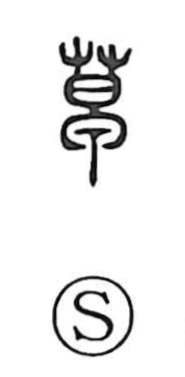

草

Uncategorized
Kun: kusa, gusa | On: sou
grass ・ weeds ・ draft ・ shabby ・ initial
Explanation
A phono-semantic character: the upper 艹 indicates plants and supplies the meaning, while 早 functions as the phonetic, giving the on reading sou; in early graphs 早 depicts the bowl of a ladle. The character continues the older form 艸 and fundamentally means grass or herbage, as in words for grassy plains and mountain plants. By extension it describes what is rough or unrefined (shabby, rustic) and, in writing, a rough copy or draft. It is also used by loan with the sense of beginning, seen in compounds such as 草創 (inauguration, first founding) and 起草 (to draft, begin writing).